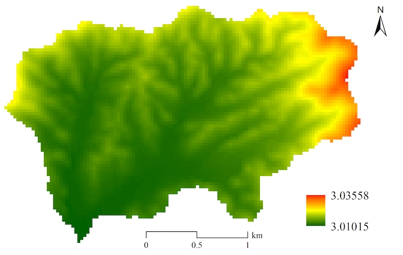
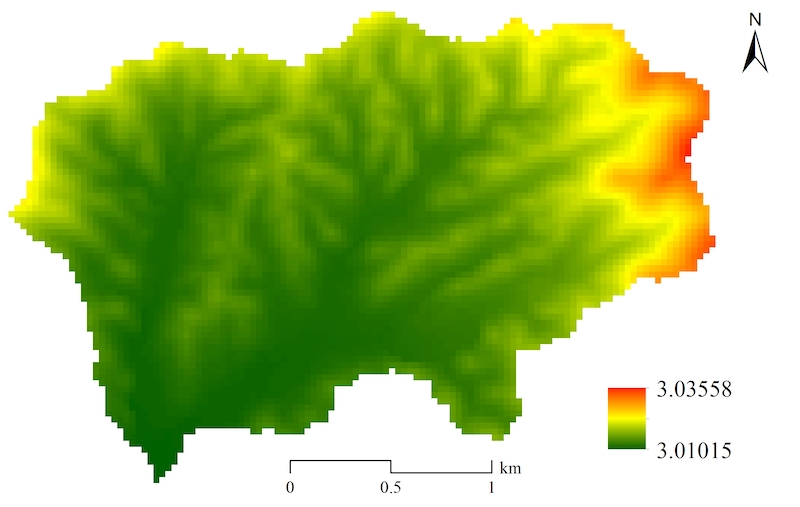
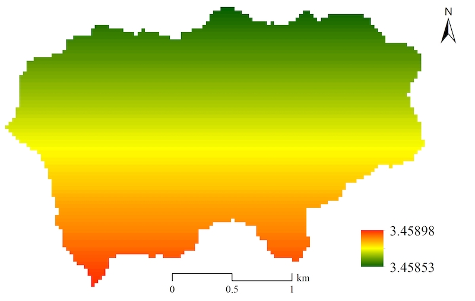
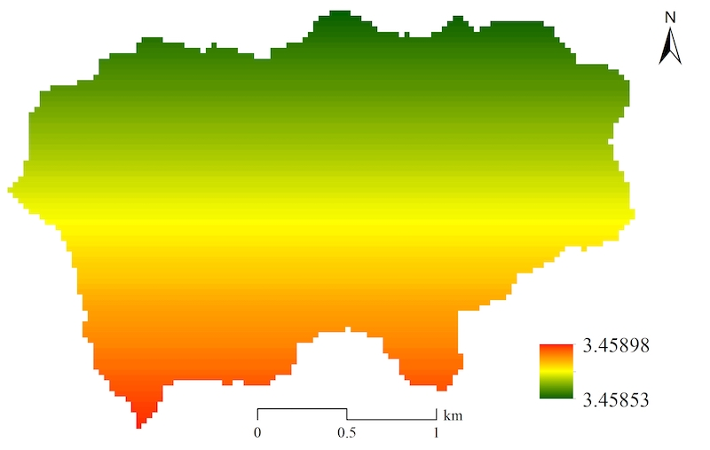

Generally, it requires three main steps to develop a new module for a specific watershed subprocess based on the SEIMS module interfaces.
CMake structure.In this section, the simulation of potential evapotranspiration using Hargreaves method was selected as an example to demonstrate these steps.
Evapotranspiration is a collective term that includes all processes by which water at the earth’s surface is converted to water vapor (Neitsch et al., 2011). It includes evaporation from the plant canopy, transpiration, sublimation, and evaporation from the soil. An accurate estimation of evapotranspiration is critical in the assessment of water resources and the impact of climate and land use change on those resources.
The Hargreaves method was originally derived from eight years of cool-season Alta fescue grass lysimeter data from Davis, California (Hargreaves, 1975). The Hargreaves method was implemented in the SWAT model with the improved equation (Hargreaves, 1985):
$$\lambda E_{o} = petco\cdot H_{0}\cdot \left (T_{max} - T_{min} \right ) ^{0.5} \cdot \left (T_{avg} + 17.8 \right )$$
where λ is the latent heat of vaporization (MJ kg-1), Eo is the potential evapotranspiration (mm d-1), petco is coefficient related to radiation which ranges from 0.0019 to 0.0032, H0 is the extraterrestrial radiation (MJ m-2 d-1), Tmax, Tmin, and Tavg are the maximum, minimum, and average air temperature for a given day (°C), respectively.
The source code of the Hargreaves method for potential evapotranspiration can be found in etpot.f. The following code snippet showed the core simulation code.
where ramn is the extraterrestrial radiation which is calculated by maximum possible radiation for the day (hru_rmx), hru_rmx is a function of day of year and latitude, xl is the latent heat of vaporization which is calculated by the mean air temperature (tmpav).
The source code of the calculation of hru_rmx can be found in clgen.f.
To sum up, the simulation of potential evapotranspiration using the Hargreaves method requires the coefficient related to radiation, latitude, maximum temperature, minimum temperature, and average temperature. The simulation code can be rewritten from the FORTRAN source code of SWAT (i.e., etpot.f and clgen.f).
As introduced in previous sections, the source code of SEIMS library is in SEIMS/seims/src/seims_main/modules. For the convenience of management, SEIMS modules are divided into several categories. There is one CMakeLists.txt file to indicate which categories are involved in the SEIMS project, i.e., SEIMS/seims/src/seims_main/modules/CMakeLists.txt.
It is worth to note that a corresponding line with the ADD_SUBDIRECTORY() command should be appended if a new category is added.
The template of the SEIMS module is the template folder located in SEIMS/seims/src/seims_main/modules/test, which contains four files, i.e., CMakeLists.txt, api.cpp, template.h, and template.cpp.
CMakeLists.txt: file used to create the project for building the module executable library.api.cpp: implementation file of MetadataInformation function.template.h: header file that defines the module class which is inherited from the basic class of SEIMS module (i.e., SimulationModule). The header file should be renamed with a meaningful name, such as PETHargreaves.h.template.cpp: implementation file that includes SetData and GetData functions CheckInputData and InitialOutputs functions, and Execute function. The implementation file should be renamed with the same filename of the header file, such as PETHargreaves.cpp.Please follow these steps to create a new SEIMS module based on the module template.
modules/hydrology_longterm, and rename with the new module name followed the format of <SubprocessNameAbbr>_<AlgorithmNameAbbr>, e.g., PET_H that means the simulation of potential evapotranspiration using Hargreaves method.Open the CMakeLists.txt file in the module folder of PET_H and specify the name of the executable library (the second line) and the project folder for Visual Studio or Xcode (the 10th line, which is Optional). For example, the content of the CMakeLists.txt file in the module template is as follows,
After modification for the PET_H module,
Note that, the 7th line is for specifying libraries to use when linking the current SEIMS module. If users do not sure how to determine the exact libraries, just keep the default settings in the module template.
Append the ADD_SUBDIRECTORY() command of the relative directory path of the new module to the CMakeLists.txt file in its parent directory, such as modules/hydrology_longterm/CMakeLists.txt, such as,
SEIMS/build/SEIMS_MPI_OMP_ALL.sln), and right-click on the ZERO_CHECK project in CMakePredefinedTargets and select Rebuild. Then, click on Reload All to reload all projects of SEIMS including the newly created module.After (re)building the SEIMS solution which includes the newly created module, the following steps are recommended to start to code.
PETHargreaves.h in this demo) and rename the class name from ModuleTemplate to PETHargreaves. Also remember to change the include guard from SEIMS_MODULE_TEMPLATE_H to SEIMS_MODULE_PET_H_H or any other unique macro name in the whole SEIMS solution.Open the api.cpp file and write the MetadataInformation function. To avoid inconsistent typing of the name, unit, and description of the same parameter/variable, definitions of all these strings are defined as macro strings in the text.h header file (SEIMS/seims/src/seims_main/base/text.h) in the current implementation of SEIMS. Thus, developers should search the planned variable first in the text.h to make sure its definition is unique.
According to the review of theory literature and source code of SWAT, eight inputs should be defined and four of them are from the database while the others are outputs of other modules.
As to the output variables of the current module, except for the potential evapotranspiration on the current day (VAR_PET), there are also an auxiliary output, i.e., the day length (VAR_DAYLEN) when calculating the maximum possible radiation for the day.
Define the input parameters, input variables from other modules, and output variables of the current module in the header file.
Complete the initialization (i.e., the constructor function that sets default values for all variables defined in header file) and finalization (i.e., the destructor function that releases the newly allocated memory of the current module such as array-based output variables).
Assign values to input parameters and input variables from other modules in SetData series functions such as SetValue, Set1DData, and Set2DData.
Accomplish the validation check of data set by SetData functions in CheckInputData function and initializing necessary output variables in InitialOutputs function.
```cpp bool PETHargreaves::CheckInputData() { CHECK_POSITIVE(MID_PET_H, m_nCells); CHECK_POINTER(MID_PET_H, m_maxTemp); CHECK_POINTER(MID_PET_H, m_meanTemp); CHECK_POINTER(MID_PET_H, m_minTemp); CHECK_POINTER(MID_PET_H, m_cellLat); return true; } void PETHargreaves::InitialOutputs() { CHECK_POSITIVE(MID_PET_H, m_nCells); if (nullptr == m_pet) Initialize1DArray(m_nCells, m_pet, 0.f); if (nullptr == m_dayLen) Initialize1DArray(m_nCells, m_dayLen, 0.f); } ```
Implement or transplant the actual simulation code in Execute function.
Note that the function of calculating maximum solar radiation of current day, as a universal function, should be separated from the specific module. So, the MaxSolarRadiation function is defined in SEIMS/seims/src/seims_main/base/common_algorithm/ClimateParams.h and implemented in SEIMS/seims/src/seims_main/base/common_algorithm/ClimateParams.cpp.
The #pragma omp parallel for is the compiler directive of OpenMP to indicate the following for-loop code region that to be executed concurrently.
Complete the GetData functions (e.g., GetValue, Get1DData, and Get2DData) for output variables of current module.
Build command.The newly developed PET_H module was tested based on the Youwuzhen watershed model customized in Section 2:4.3.3. The module configuration file is as follows.
The Youwuzhen watershed model was executed with all model parameters remain the default values as well. Figure 1 showed the spatial distributions of average potential evapotranspiration simulated by the Priestley-Taylor method (Figure 1 upper) and Hargreaves method (Figure 1 below).
 

 

Figure 1 Spatial distributions of average potential evapotranspiration simulated by the Youwuzhen watershed model using the (upper) Priestley-Taylor method and the (below) Hargreaves method